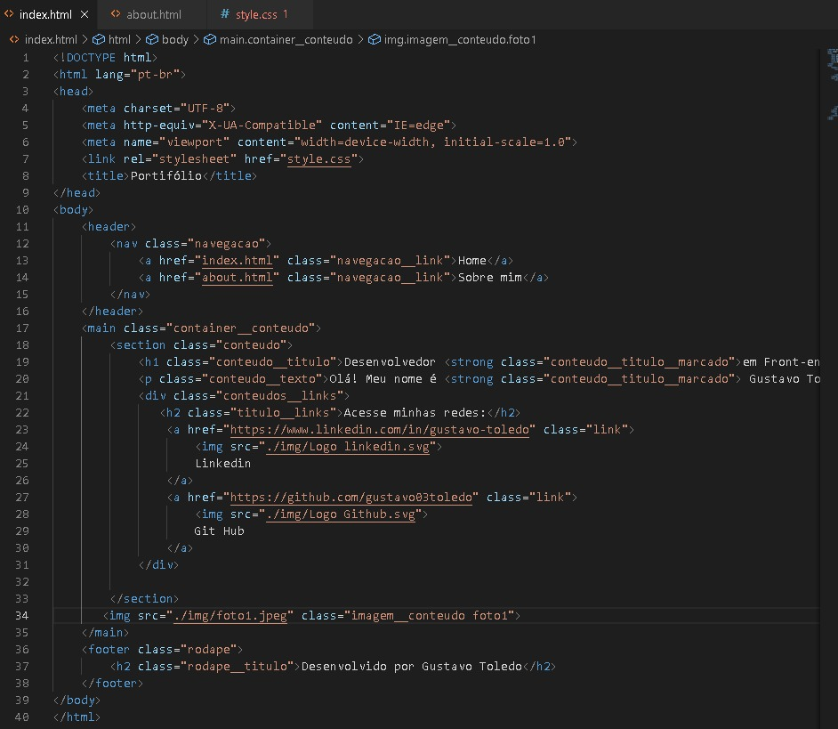
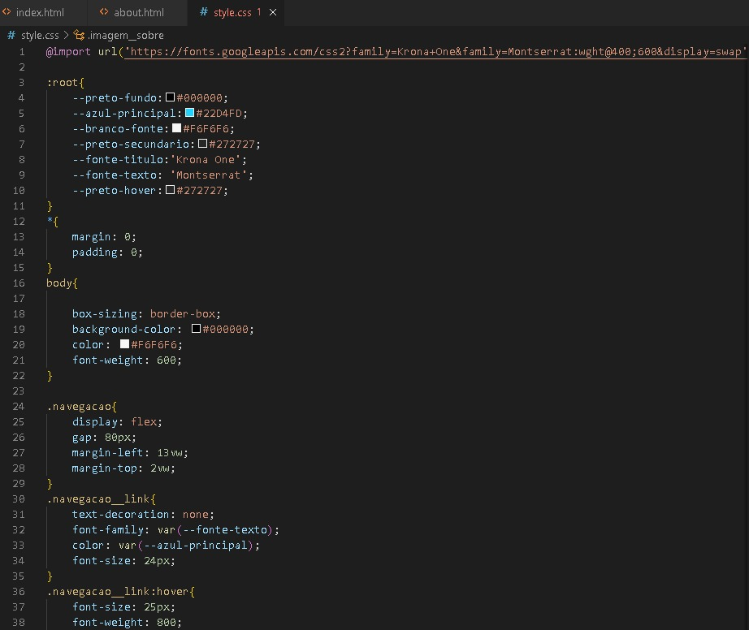
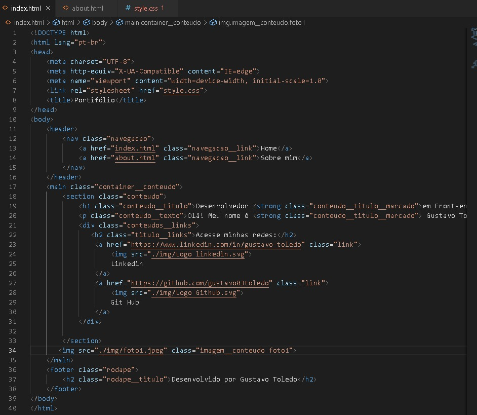
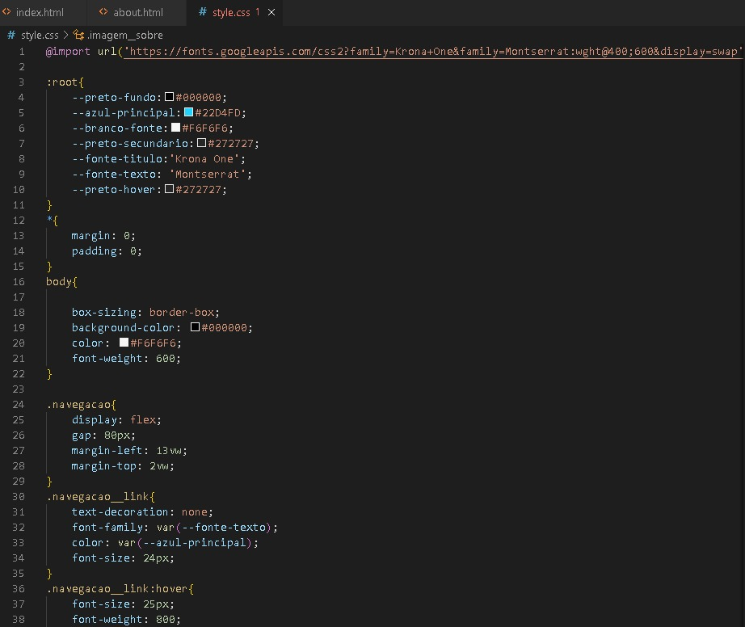

Sobre Mim
Olá, meu nome é Gustavo e estou em uma emocionante transição de carreira para a área de programação front-end. Com 26 anos, percebi que meu verdadeiro chamado era a tecnologia e agora estou determinado a seguir essa paixão.
Estou estudando programação front-end e estou impressionado com a facilidade com que aprendo e como sou dedicado em mergulhar profundamente nos conteúdos para encontrar soluções viáveis para os problemas. Sou naturalmente bom com problemas de lógica e adoro desafios. Acho que a programação é uma maneira emocionante de usar essa habilidade para resolver problemas do mundo real.
Durante minha jornada de aprendizado, fiquei fascinado pela capacidade de criar interfaces incríveis e envolventes com HTML, CSS e JavaScript. A possibilidade de criar algo do zero e ver a magia acontecer é realmente gratificante.
Sinto que agora encontrei meu lugar na indústria da tecnologia e estou animado para explorar todas as oportunidades disponíveis nessa área. Estou ansioso para aplicar minhas habilidades em programação front-end para ajudar empresas e pessoas a criar experiências online envolventes e eficazes.
Obrigado por visitar meu portfólio e sinta-se à vontade para entrar em contato comigo. Estou ansioso para fazer parte de uma equipe de tecnologia dinâmica e inovadora.
 


